Bibbulmun Track
Through the tall forests and granite coast of south west Australia to Albany.
Bibbulmun Track runs 1,000 km through Australia and finishes at Albany. It starts at Kalamunda Northern Terminus. Your ordinary week counts toward all of it: at 5,000 steps a day that's about 40 weeks, with no flights and no leave. Below are the 36 places you pass, each with its photograph and its story.
- 1,000km end to end
- 36landmarks
- 40 weeksat 5,000 steps a day
- Albanyfinishes at

The landmarks of Bibbulmun Track
36 landmarks, in walking order. Each photograph is by the person credited beneath it, used as they licensed it.
-
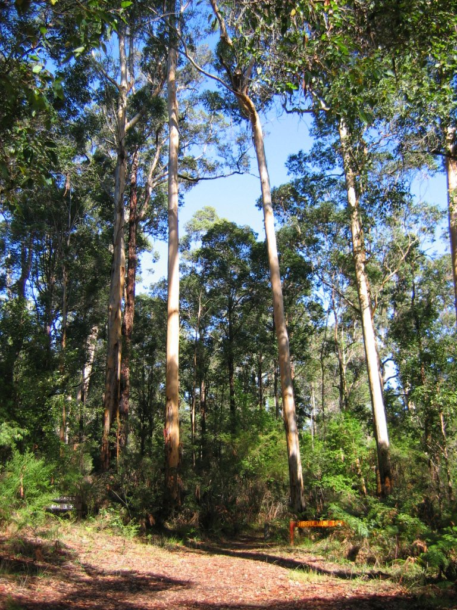
Photo: Orderinchaos · Wikimedia Commons, CC BY-SA 3.0 Kalamunda Northern Terminus
A timber archway marks the northern end of the Bibbulmun in the Perth hills, some twenty-four kilometres east of the city, where the long line of yellow Waugal markers begins. A thousand kilometres of jarrah forest, karri giants and southern coastline stretch away to the south. The Track is named for the Bibbulmun people, who moved through this country between the hills and the sea.
-
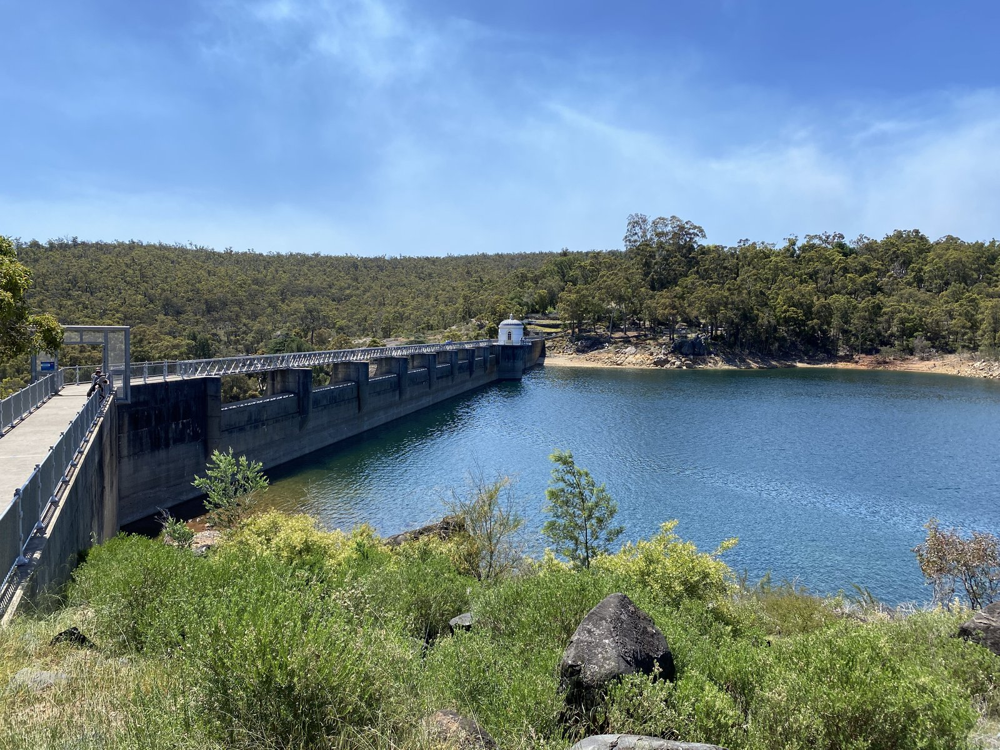
Photo: Silverhorse · Wikimedia Commons, CC0 Mundaring Weir
The great curved wall of Mundaring Weir was built in 1903 to pump water more than 550 kilometres east to the goldfields at Kalgoorlie, an engineering feat once thought impossible. It holds back the Helena River in a quiet valley of jarrah and marri, and the Track crosses the wall before climbing on into the Darling Range.
-
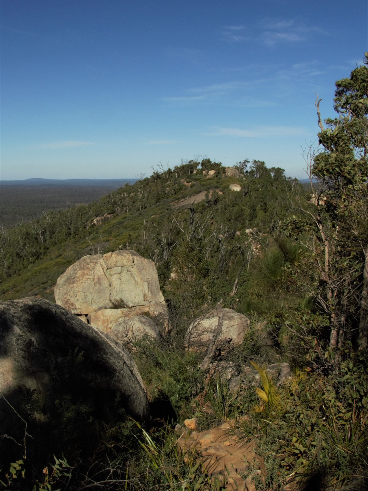
Photo: Calistemon · Wikimedia Commons, CC BY-SA 4.0 Mount Cooke
The bare granite back of Mount Cooke rises to 582 metres, one of the highest points on the Darling Scarp and the loftiest the Track reaches. From the ridge the jarrah forest rolls away in every direction, broken only by other granite monadnocks standing like islands. The peak was named after William Ernest Cooke, Western Australia's first Government Astronomer.
-
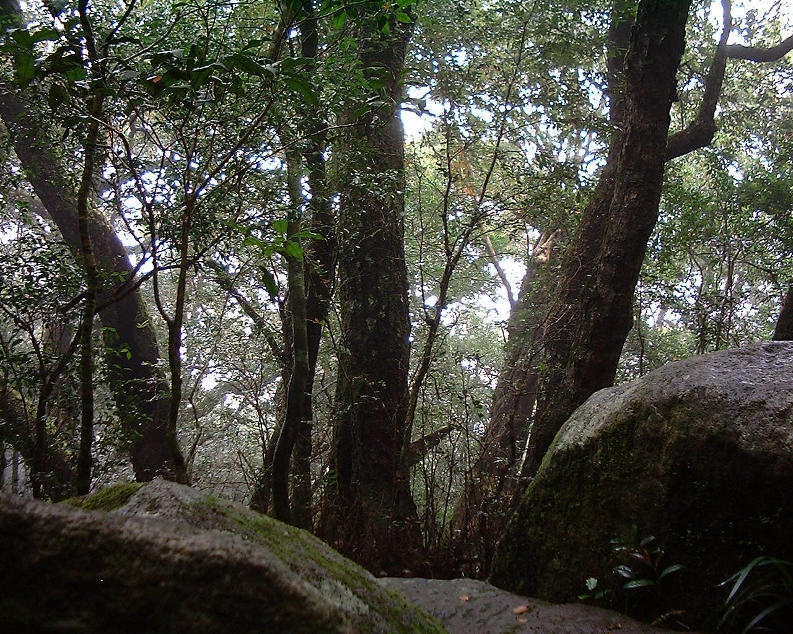
Photo: Lady alys · Wikimedia Commons, CC BY-SA 3.0 Nerang Campsite
Down off the granite ridges sits Nerang, a quiet timber shelter among wandoo and marri where the powderbark gums shed their salmon-pink skins. Bronzewing pigeons clatter up from the leaf litter, and the tank water carries the taste of the surrounding wandoo woodland. Rolling country runs on to the south.
-
Gringer Creek Campsite
Gringer Creek's shelter perches on the edge of a low hill, looking out over wandoo and a scatter of grasstrees. This is open, sunlit woodland rather than the dense jarrah of the north, and in spring the grass between the trees runs with wildflowers. Western grey kangaroos graze here at dusk, before the Track rises toward the high country.
-
Mount Wells Campsite
Mount Wells holds the only fully enclosed hut on the entire Track, a converted fire-watchman's cottage beside a disused steel lookout tower. It is the highest campsite on the Bibbulmun, and from the old tower's base the jarrah forest falls away in every direction. Beyond it the Track drops toward the river town of Dwellingup.
-
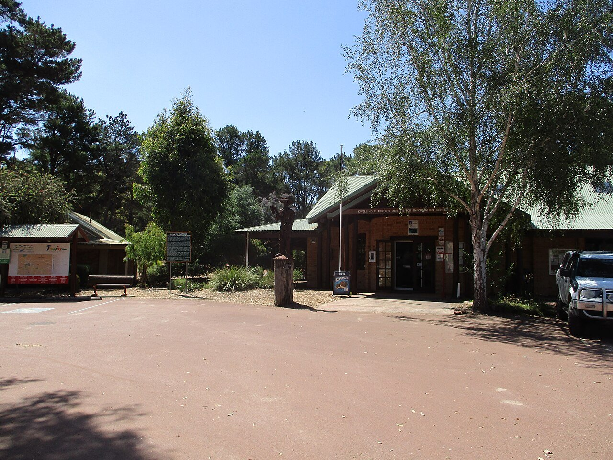
Photo: Calistemon · Wikimedia Commons, CC BY-SA 4.0 Dwellingup
Dwellingup is a timber and forest town, burned to the ground in the bushfires of 1961 and rebuilt among the jarrah. The Murray River winds nearby, and woodsmoke often hangs in the air. It is the last resupply before the long forest stretch south to Collie.
-
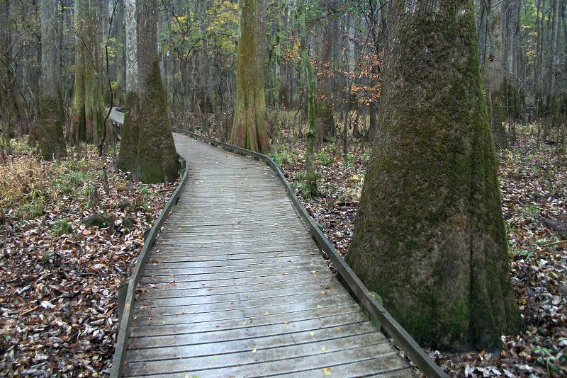
Photo: Brian W. Schaller · Wikimedia Commons, FAL Swamp Oak Campsite
Deep in the jarrah of Lane Poole Reserve, Swamp Oak sits where the Murray River begins to shape the country. The shelter stands among tall trees with the soft sound of the river not far off, and the air is cool and resinous. Riverside walking lies ahead as the forest darkens toward night.
-
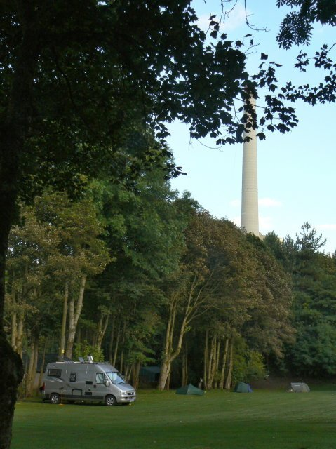
Photo: Alan Murray-Rust · Wikimedia Commons, CC BY-SA 2.0 Murray Campsite
The Murray River runs clear over granite here, and the Murray campsite sits right on its bank, its karri-fringed pools inviting a swim. This is one of the loveliest river camps on the Track. Downstream the route follows the water south past the Bilya Djena suspension bridge.
-
Dookanelly Campsite
Tucked back in the jarrah away from the river, Dookanelly is a peaceful shelter where the only traffic is the occasional emu picking through the understorey. The forest here is virgin jarrah, untouched and cathedral-tall, and the silence at night is complete. Long forested miles run on toward Possum Springs.
-
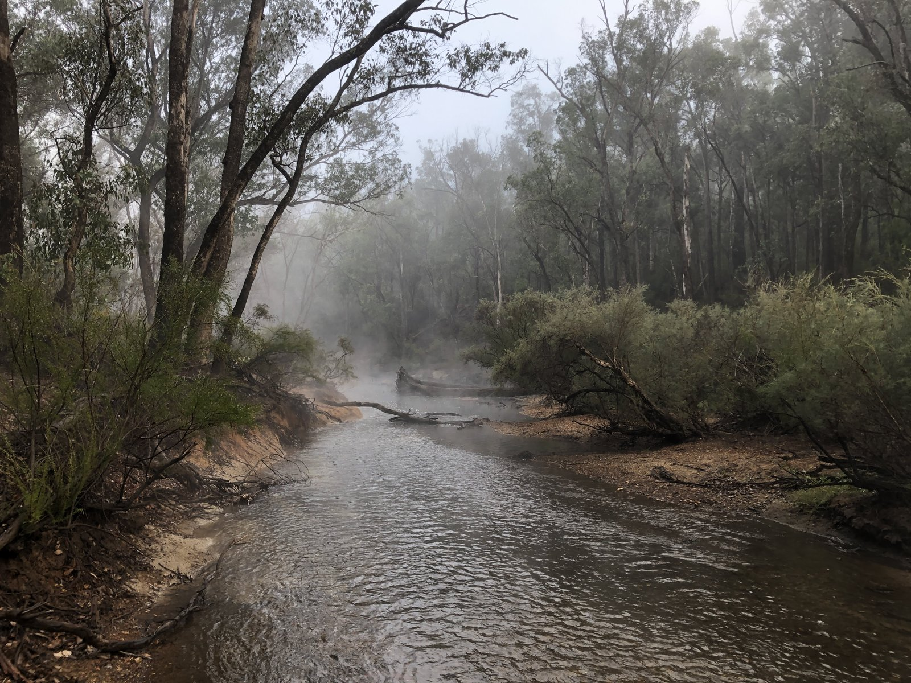
Photo: Kwokka3 · Wikimedia Commons, CC BY-SA 4.0 Possum Springs Campsite
Possum Springs lies across the Murray, over the Bilya Djena bridge, its shelter set in cool jarrah near a soak that gives the place its name. Brushtail possums visit after dark, drawn to any food left unguarded in the shelter. Paperbark swamps spread across the country to the south.
-
Yourdamung Campsite
At the foot of a grand stand of virgin jarrah sits Yourdamung, ringed by paperbark swamps and a profusion of native orchids. No campfires are allowed here, partly to protect the spider and donkey orchids that bloom around the shelter in season. Harris Dam lies further along the Track.
-
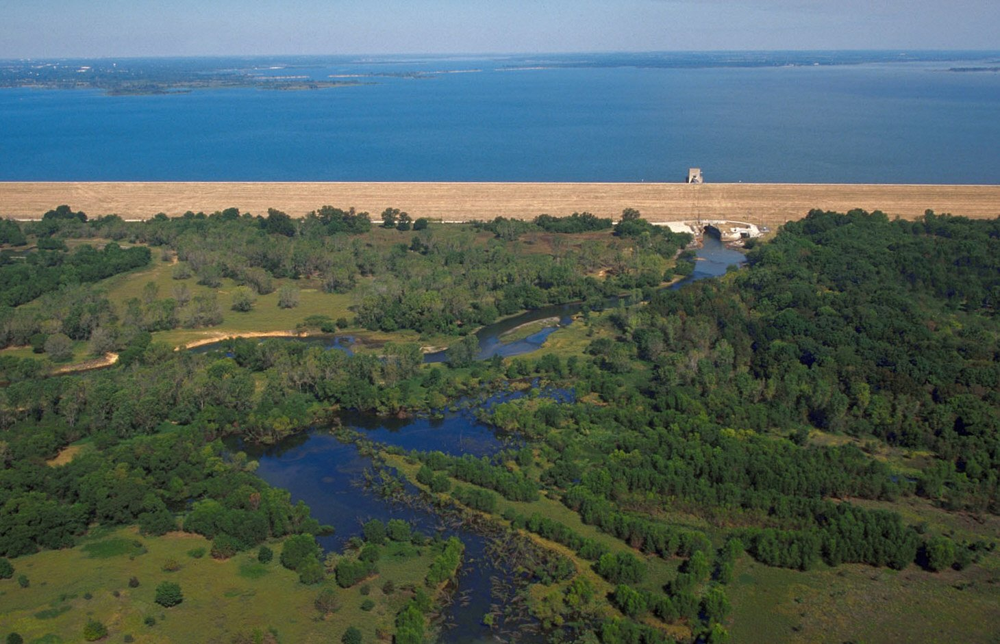
Photo: U.S. Army Corps of Engineers, photographer not specified or unknown · Wikimedia Commons, Public domain Harris Dam Campsite
Harris Dam's shelter stands near the broad still water that supplies Collie and the surrounding farms. Parkland and picnic tables make this a gentle, sociable camp after the deep forest, and the dam's edge catches the fading light well. A short walk leads on into the coal town of Collie.
-
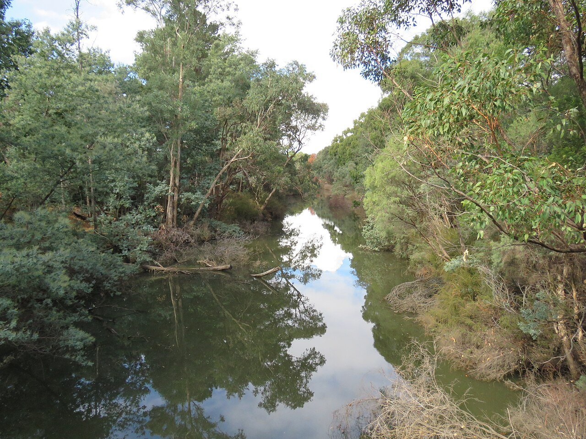
Photo: Calistemon · Wikimedia Commons, CC BY-SA 4.0 Collie
Collie sits where the jarrah finally opens into gentler valley country, the air carrying coal dust and cut hay from the surrounding farms. It is the only coal town in the state, a working place rather than a forest hamlet. South of it the Track fords the Collie River toward the shaded hut at Yabberup.
-
Yabberup Campsite
South of Collie, across the Collie River, Yabberup lies deep in the jarrah forest. The shelter is quiet and well shaded, a classic three-sided Bibbulmun hut with a rainwater tank and the green Waugal logbook on its hook. Gentle valley country leads on toward the old Mumballup pub and Noggerup beyond.
-
Noggerup Campsite
Noggerup's shelter sits on the fringe of mixed forest and farmland, reached past Glen Mervyn Dam and, for those who detour, a counter meal at the Mumballup Tavern. It marks the slow change from deep jarrah toward the green Blackwood valleys. The patchwork hills of Balingup lie ahead.
-
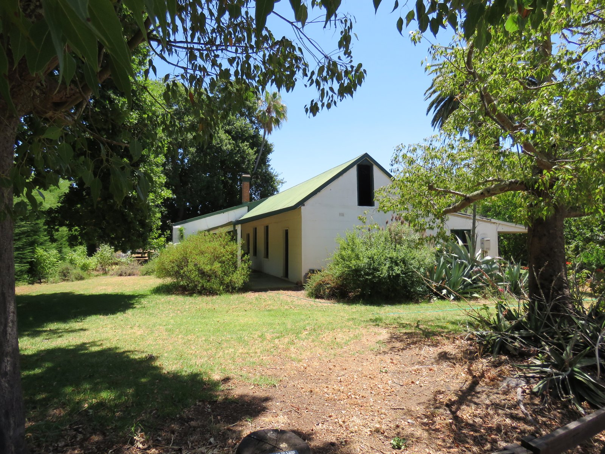
Photo: Calistemon · Wikimedia Commons, CC BY-SA 4.0 Balingup
Balingup lies in a green farming valley in the Blackwood country, a small artistic village famed for its tidy patchwork hills. Here the forest opens into pasture and orchard for a while. A warm bed and a hot meal wait before the Track climbs back into the trees toward Donnelly River.
-
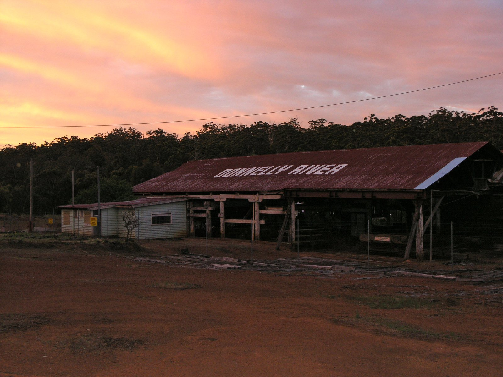
Photo: SeanMack · Wikimedia Commons, CC BY-SA 2.5 Donnelly River Village
Donnelly River Village marks roughly the halfway point of the Track, a former timber-mill settlement turned holiday hamlet. Tame kangaroos and emus graze between the old weatherboard cottages, unbothered by walkers. From here the great karri forests begin in earnest.
-
Boarding House Campsite
Named for a long-gone timber-mill lodging, Boarding House stands in tall karri near the arched Boarding House Bridge over the Donnelly River. The water slides green and quiet beneath the timber span, a fine place to pause. Ahead lies the switchback of ridges walkers call the Donnelly River Rollercoaster.
-
Beavis Campsite
Beavis is a welcome sight among the karri, coming after the relentless climbs and drops that walkers call the Donnelly River Rollercoaster. The forest here is wild and deeply green, ferns crowding the gullies between the ridges. Waterfalls near Beedelup lie further south.
-
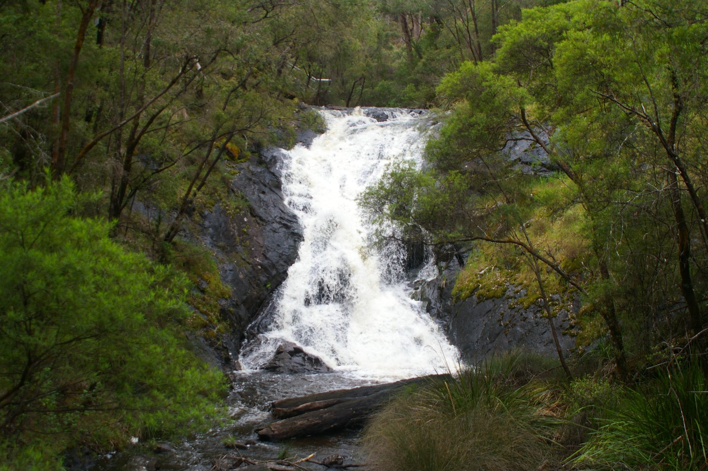
Photo: Hughesdarren · Wikimedia Commons, Public domain Beedelup Falls
At Beedelup Falls, Beedelup Brook tumbles in white cascades over granite steps, and a swing bridge crosses the gorge through the spray. A loop boardwalk threads the karri and a hollowed living tree wide enough to walk through. The last karri miles run on from here into Pemberton.
-
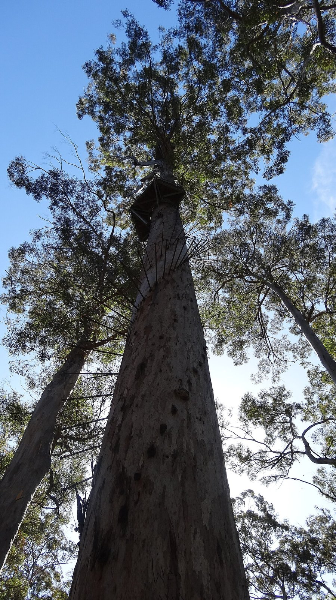
Photo: David La Rosa · Wikimedia Commons, CC BY-SA 4.0 Pemberton
Pemberton is a karri-timber town set deep in the tallest forest of the South West. Towering eucalypts shut out the sky, and the air turns cool and green. It is the main resupply before the giant-tree country and the long wild stretch down to the coast.
-
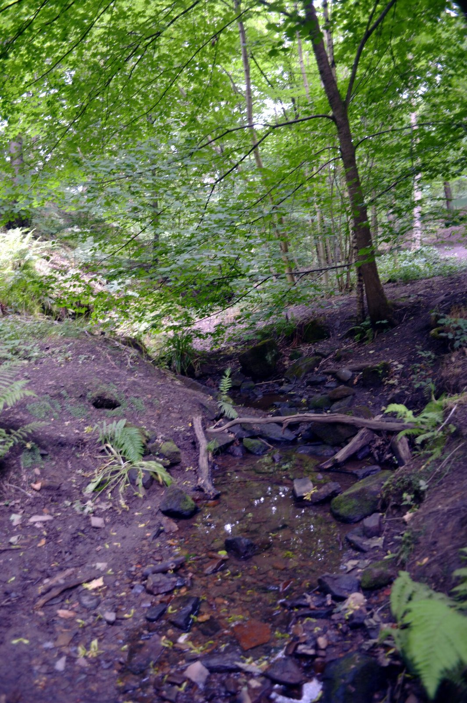
Photo: habiloid · Wikimedia Commons, CC BY-SA 2.0 Northcliffe
Ringed by some of the densest karri and marri forest on the Track, Northcliffe is a tiny settlement facing a big stretch of country. Beyond it lies the longest and most remote section of all, where the forest gives way to coastal heath and the first scent of the sea. The wild country runs on to Walpole.
-
Gardner Campsite
Beyond Northcliffe the Track enters the wild heart of D'Entrecasteaux country, reaching Gardner in low forest and heath. The shelter is remote and quiet, the kind of place where the night sky blazes unspoiled, and the Gardner River runs not far off through the wilderness. The country ahead is long and lonely, with water scarce.
-
Lake Maringup Campsite
Lake Maringup is one of the largest freshwater lakes in the south-west, its tea-coloured water spreading wide and still beyond the paperbarks. The shelter looks out over the lake, and at dawn the surface mirrors the sky in perfect calm. This is deep wilderness camping with few visitors, before the heath and granite to the south.
-
Dog Pool Campsite
Beside a deep, dark reach of the Shannon River lies Dog Pool, shaded by paperbarks and overhanging banks. The pool is cool and inviting after the open heathland miles, and the river slides past with barely a sound. The climb to Mount Chance rises beyond it.
-
Mount Chance Campsite
Mount Chance is a granite dome rising out of the flat coastal plain, with sweeping views across the wilderness in every direction. The shelter sits below the summit, and a short scramble up the bare rock at sunset opens a horizon of untouched forest and heath. From here the Track descends toward the southern forests.
-
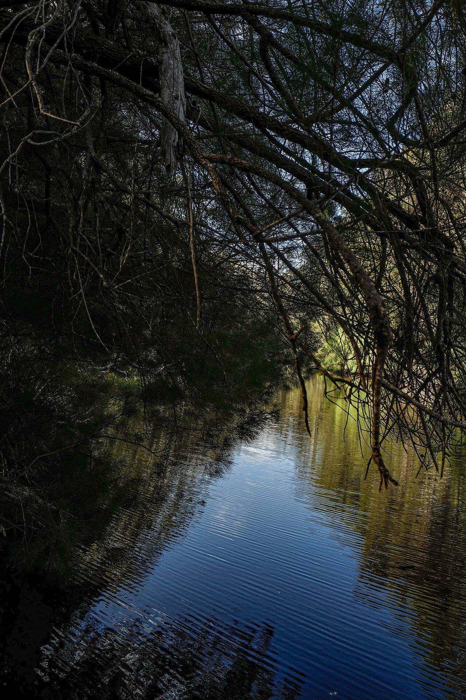
Photo: Flamingodoc · Wikimedia Commons, CC BY-SA 4.0 Frankland River Campsite
Often voted the most beautiful camp on the whole Bibbulmun, Frankland River sits high on the bank above dark, slow-curving water. Tingle and karri crowd the slopes, and the river below is a fine place to swim or simply sit. The Valley of the Giants lies on the climb ahead.
-
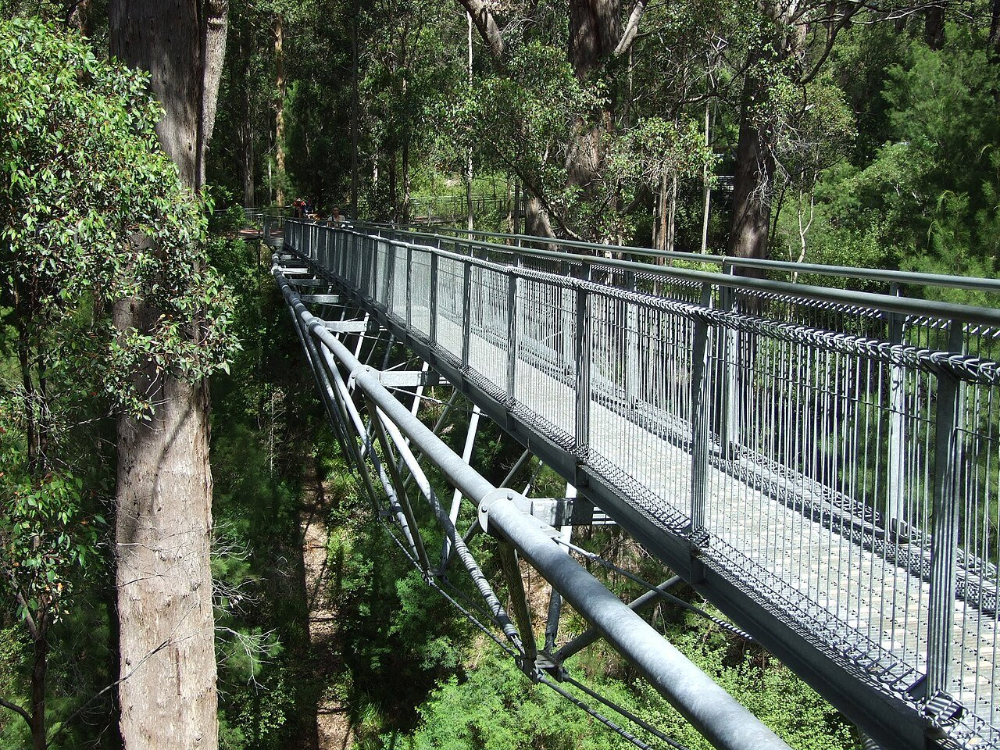
Photo: Tamsin Slater · Wikimedia Commons, CC BY-SA 2.0 Valley of the Giants
The Valley of the Giants is a grove of red tingle trees found nowhere else on earth, some buttressed so wide their hollow bases could shelter a car. These ancient giants have stood since before the first walkers passed this coast. The southern ocean is close now, and Denmark lies along the shore ahead.
-
Rame Head Campsite
High on a coastal hill, the shelter at Rame Head catches the sun rising over the Southern Ocean. Below, the cliffs drop to wild beaches, and the first salt wind of the coast arrives after the long inland forests. The Track drops from here toward the beaches and the hamlet of Peaceful Bay.
-
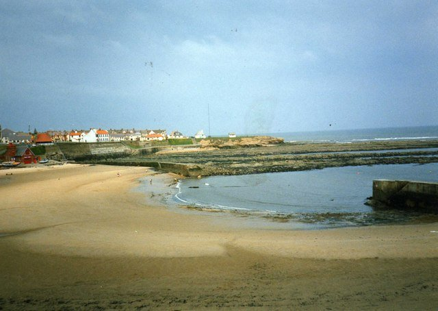
Photo: james denham · Wikimedia Commons, CC BY-SA 2.0 Peaceful Bay
Peaceful Bay is a tiny holiday hamlet on the edge of the Southern Ocean, fishing shacks clustered behind the dunes and a kiosk selling hot chips to passing walkers. A short paddle or wade across the inlet lies just beyond the village. From here the coast runs east toward Boat Harbour.
-
Boat Harbour Campsite
After a long coastal day of scrub, estuary crossing, beaches and wide sea views, Boat Harbour's shelter is tucked behind the dunes within sound of the surf. This is one of the longest days on the Track, and the camp is a hard-won reward. The sheltered pools of William Bay lie ahead.
-
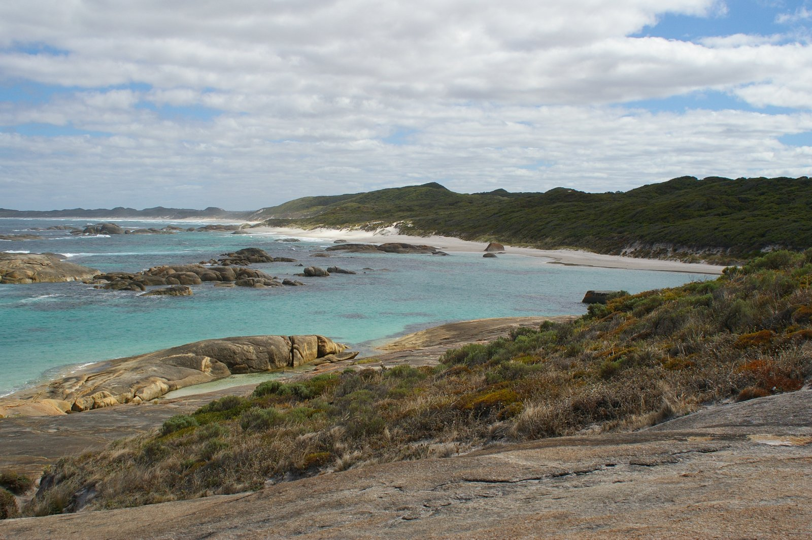
Photo: Hughesdarren (talk) · Wikimedia Commons, Public domain Greens Pool
The Track touches the coast at Greens Pool in William Bay, where a wall of rounded granite boulders holds back the ocean to make a clear, sheltered lagoon. The water glows turquoise over white sand, calm enough to swim while the swell breaks beyond the rocks. Mount Hallowell rises on the way toward Denmark.
-
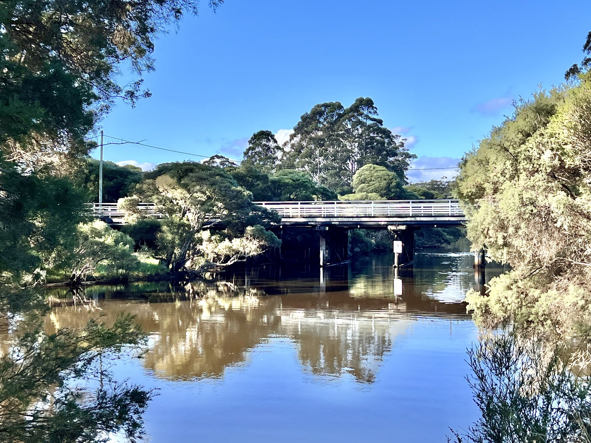
Photo: Kgbo · Wikimedia Commons, CC BY-SA 4.0 Denmark
Denmark sits on the Wilson Inlet, a riverside town with cafes, a brewery and the first proper bed in many days. The wide inlet mirrors the sky, and pelicans loaf on the sandbar where it opens to the sea. Along the inlet shore runs the final leg to Albany.
-
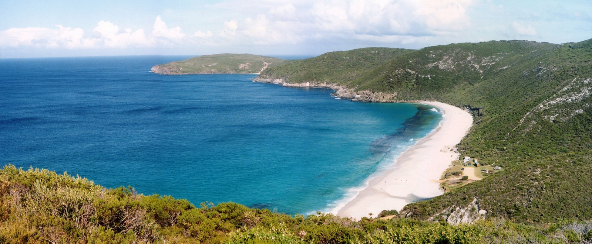
Photo: aussiejeff · Wikimedia Commons, CC BY 3.0 West Cape Howe
The southernmost point of Western Australia lies here at West Cape Howe, where sheer black dolerite cliffs drop into a heaving ocean. Climbers sometimes hang from ropes on the dark rock far below the lookout. From the very bottom of the state, the Track turns for the home stretch into Albany.
-
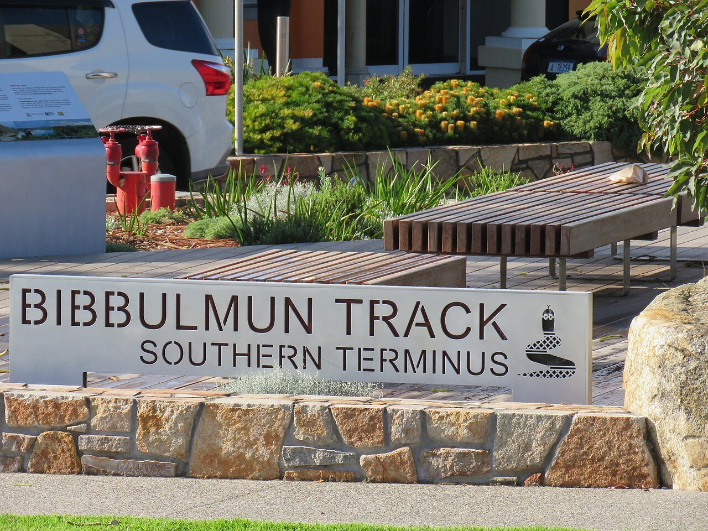
Photo: Calistemon · Wikimedia Commons, CC BY-SA 4.0 Albany Southern Terminus
At the southern Waugal marker beside the Albany visitor centre, the rugged south coast finally runs out, a thousand kilometres of forest, ridge and shoreline unspooled behind it. The Bibbulmun people's path from the hills to the sea is complete: jarrah and karri giants, granite summits, wild beaches and tingle groves, all strung along a single line. This is the end of the Bibbulmun Track.
Walking the Bibbulmun Track
Your watch is already counting these steps. Watch Walks spends them on the Bibbulmun Track, all 1,000 km of it, and hands you each landmark as you reach it. There's no route recording, no account and no ads. The Inca Trail is free; this one is a one-time purchase with no subscription.
Other trails in Oceania
- Te Araroa 3,000 km · New Zealand
- Larapinta Trail 223 km · Australia (NT)
- Australian Alps Walking Track 655 km · Australia (VIC/NSW/ACT)
- Cape to Cape Track 123 km · Australia (WA)
- Routeburn Track 32 km · New Zealand
- Overland Track 65 km · Australia (Tasmania)